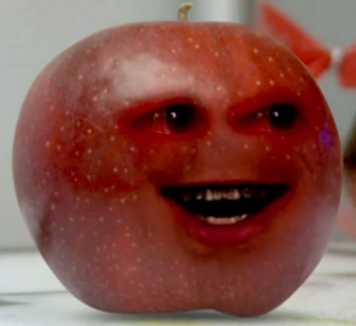

An apple is a sweet, edible fruit produced by an apple tree (Malus pumila). Apple trees are cultivated worldwide and are the most widely grown species in the genus Malus. The tree originated in Central Asia, where its wild ancestor, Malus sieversii, is still found today. Apples have been grown for thousands of years in Asia and Europe and were brought to North America by European colonists. Apples have religious and mythological significance in many cultures, including Norse, Greek and European Christian traditions.  Apple trees are large if grown from seed. Generally, apple cultivars are propagated by grafting onto rootstocks, which control the size of the resulting tree. There are more than 7,500 known cultivars of apples, resulting in a range of desired characteristics.
Orange (colour), occurs between red and yellow in the visible spectrum Orange (fruit), the fruit of the tree species Citrus sinensis Orange blossom Some other citrus or citrus-like fruit. see list of plants known as orange Orange (word), both a noun and an adjective in the English language.